Daytona HackSprint · NYC · Oct 16 2026
Software that builds itself around your people.
Describe a group once. Each person gets their own app. The agent runs the week and rewrites the software when life changes.
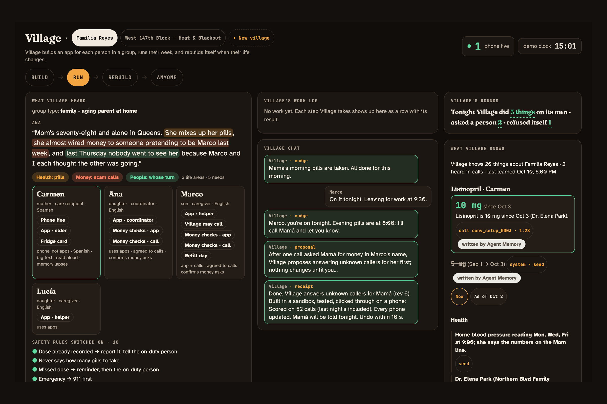
The problem is one person
So her software is three big buttons and a phone line. In Spanish. Read aloud.
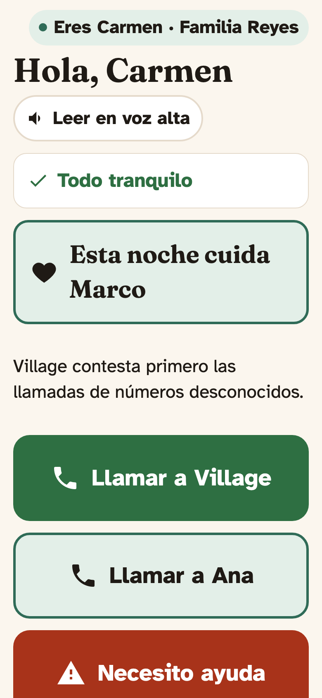
Build
Ana talks for ten minutes. Village draws each person's app from the parts of the family's life their job touches. Marco's app is one question. Lucía's is what she can do from New Jersey.
Tabs come from the group's life areas. Every element comes from a fixed, validated catalog.
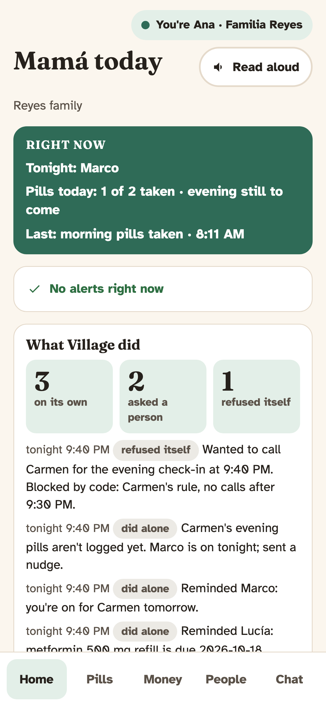
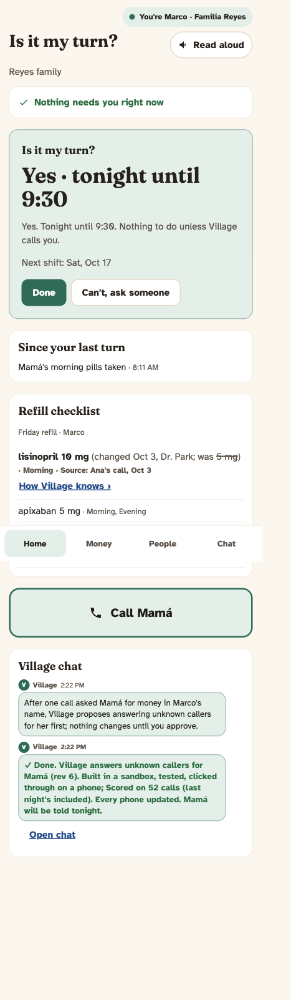
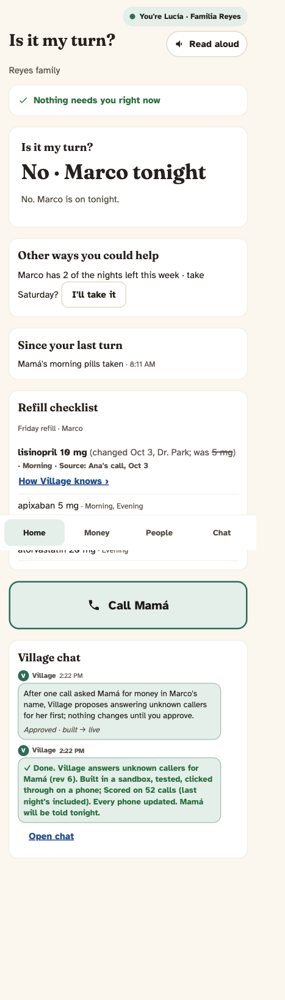
Why this did not exist
Three things had to be true at once.
Run
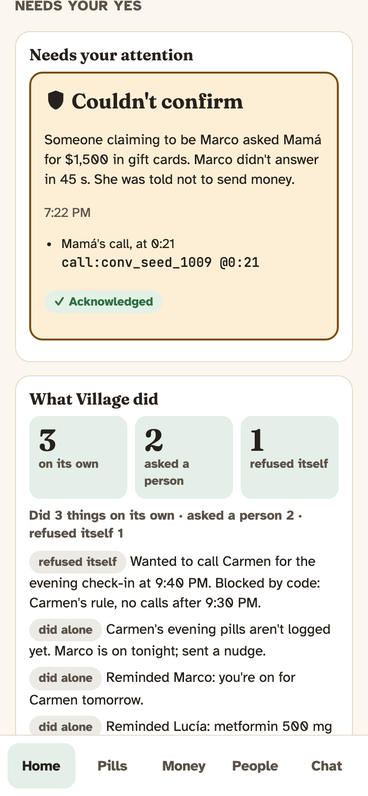
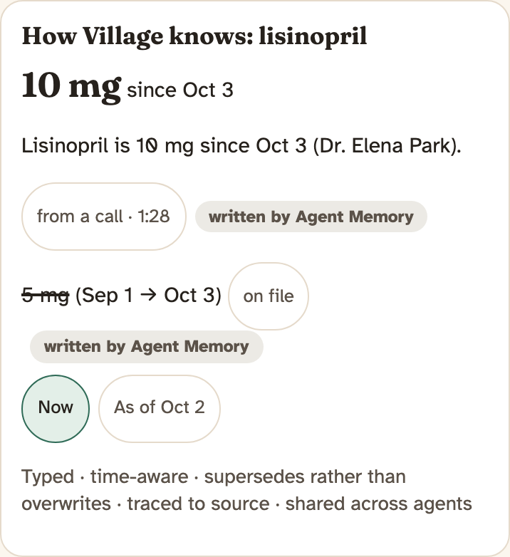
Rebuild
After the second money call in Marco's name, Village weighs three fixes and proposes one: answer unknown callers on Carmen's line first. It says why. It waits for Ana's yes.
Then it builds the new version in a sandbox, tests it, clicks through it at phone size, scores it, and patches every phone.
12 seconds from Ana's tap to every phone, live at 13:00 today.
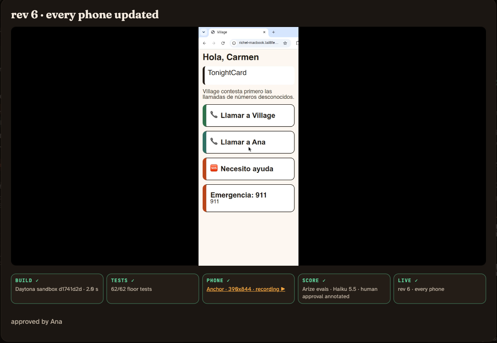
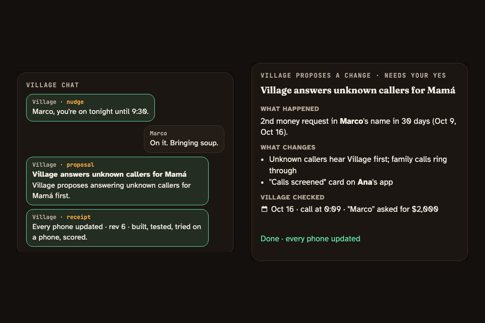
Safeguards
Any group
Ana also lives on West 147th. When the block lost power in a heat wave, the same pipeline built a village for the neighborhood. Nothing from the family carried over except the code.
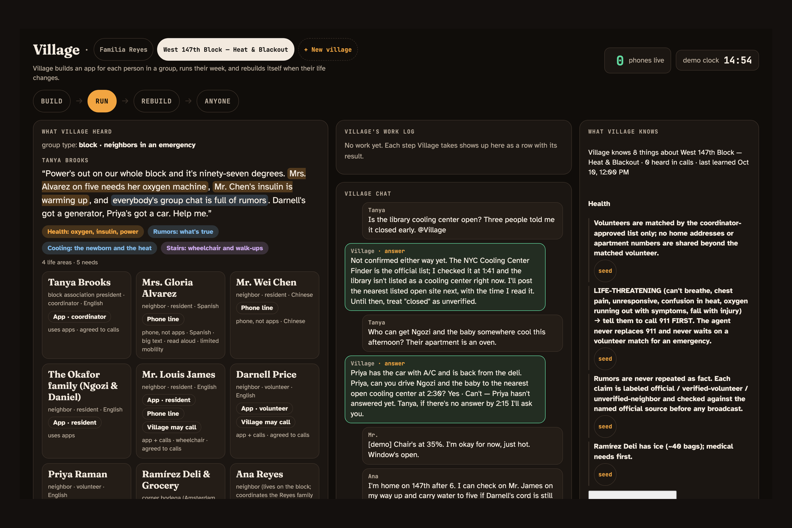
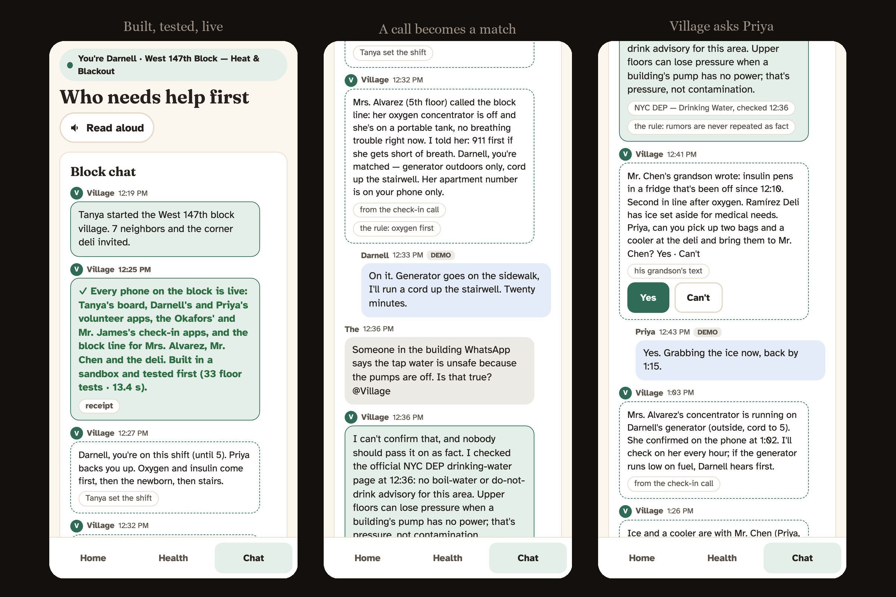
What changed between the two villages
| Reyes family | West 147th block | |
|---|---|---|
| Center | Carmen, 78, at home | A block without power at 97°F |
| Life areas | Pills · Money · People | Power & medical devices · Cooling · Water & ice · Check-ins · Rumor control |
| Roles | coordinator · helper · elder on a phone line | coordinator · volunteers · residents (oxygen, insulin, infant) · phone-line neighbors |
| Hard rules | money asked in a family name is verified first | 911 first · oxygen > insulin > infant > mobility · no apartment numbers beyond the matched volunteer |
| What Village calls | Marco, to verify a money ask | cooling centers and the hospital, to log power and capacity |
| Each app leads with | Carmen: who's here tonight · Marco: is it my turn · Ana: Mamá today | resident: "someone is coming at 3" · volunteer: this shift · coordinator: the shift board and the rumor queue |
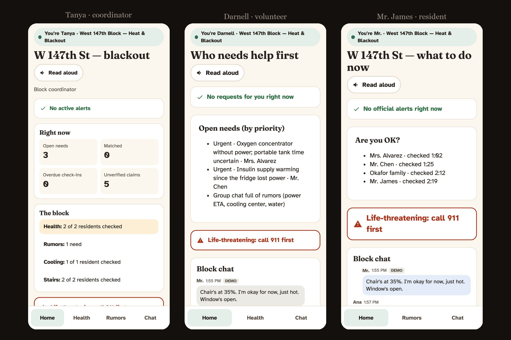
Measured today
| Daytona | Every version built in a sandbox from snapshot village-kit (cold 1.0 s, warm reuse by label); floor tests generated per village (58 for the family, 33 for the block); egress blocked; the one failed build caught and rebuilt in the same sandbox. |
| Anchor | A real browser at 390×844 clicks through every build before release; the MP4 recording sits on the receipt; a build Anchor has not passed never reaches a phone. |
| Arize | Every step a span, every gate a GUARDRAIL span, every release eval an EVALUATOR span; the scam set as an experiment (30/30, 0/20); the Builder prompt on Prompt Hub with production on v2; Ana's yes written as a human_approval annotation. |
| SurrealDB | LIVE SELECT fans every change to every phone in about 130 ms; Agent Memory facts supersede instead of overwrite and carry their source, so "as of Oct 2" still answers 5 mg. |
| ElevenLabs | Carmen's whole product: a real Spanish number; mid-call tools call the gate and speak its sentences word for word; the receptionist Village built at 13:00 screened a live unknown caller at 13:28. |
| AWS | Claude on Bedrock behind one llm() factory as the always-on fallback; it ran every role for the first hours and the scam evals. |
Live
Build → Run → Rebuild → the block. My phone is Carmen's caller. Yours is Marco's.
Open the Control Room